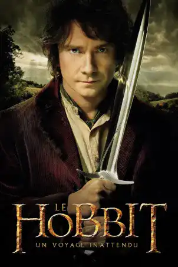
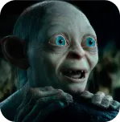
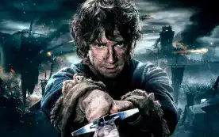
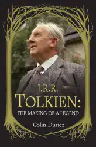

Cinéplique

Le Hobbit : Un voyage Inattendu
Affiche du film Le Hobbit : Un voyage inattendu
La découverte de l’univers de Tolkien
Le Hobbit : Un voyage inattendu est un film réalisé par Peter Jackson, sorti en 2012. C’est le premier volet d’une trilogie adaptée du roman Le Hobbit de J.R.R. Tolkien, publié en 1937. Ce film est un préquel à la trilogie du Seigneur des anneaux, qui se déroule soixante ans plus tard dans le même monde fantastique. Le film raconte les aventures de Bilbon Sacquet, un hobbit qui part avec le magicien Gandalf et une compagnie de treize nains pour reprendre le royaume d’Erebor, envahi par le dragon Smaug.
Les personnages principaux

Gandalf le Gris
Bilbon Saquet
Thorin Écu-de-chêne

Gollum
Bilbon est un hobbit qui part à l’aventure avec Gandalf, un magicien sage et malicieux, Thorin, un nain courageux et orgueilleux, et Gollum, une créature folle et solitaire.
Un film a succès
Le film a été réalisé dans le contexte du succès de la trilogie du Seigneur des anneaux, qui a été adaptée du roman éponyme de J.R.R. Tolkien, publié entre 1954 et 1955. Cette trilogie, également réalisée par Peter Jackson, a connu un grand succès critique et commercial, et a remporté de nombreux prix, dont 17 Oscars. Le film Le Hobbit : Un voyage inattendu est donc une suite attendue par les fans de l’univers de Tolkien, qui ont envie de retrouver les personnages, les lieux, et l’ambiance du Seigneur des anneaux.
Le film a aussi pour but de faire découvrir aux spectateurs le roman Le Hobbit, qui est moins connu que le Seigneur des anneaux, mais qui est tout aussi riche et passionnant. Le film a pour but de respecter l’esprit du livre, qui est plus léger et plus humoristique que le Seigneur des anneaux, tout en le rendant plus épique et plus complexe, en ajoutant des éléments tirés d’autres œuvres de Tolkien, comme les appendices du Seigneur des anneaux ou le Silmarillion
Le film et le livre : une adaptation fidèle mais libre
Le film est basé sur le roman de J.R.R. Tolkien, publié en 1937. C’est le premier film d’une trilogie réalisée par Peter Jackson, qui a aussi fait le Seigneur des anneaux. Le film suit le livre, qui raconte le voyage de Bilbon Sacquet, un hobbit, avec Gandalf, un magicien, et des nains, pour reprendre un royaume à un dragon. Le film reprend les scènes et l’esprit du livre, mais il ajoute aussi des éléments tirés d’autres livres de Tolkien, ou inventés par les scénaristes.
Livre de Colin Duriez sur J.R.R Tolkien
Les spectateurs et les fans : des réactions partagées
Les spectateurs peuvent aimer ou pas le film, selon qu’ils connaissent ou pas le livre. Certains trouvent que le film respecte et enrichit le livre, en ajoutant des liens avec le Seigneur des anneaux, et en rendant l’histoire plus épique. D’autres trouvent que le film trahit et superpose le livre, en ajoutant des choses qui ne sont pas nécessaires, et en perdant le charme et la simplicité du livre.